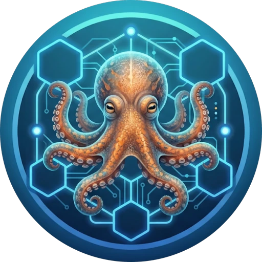
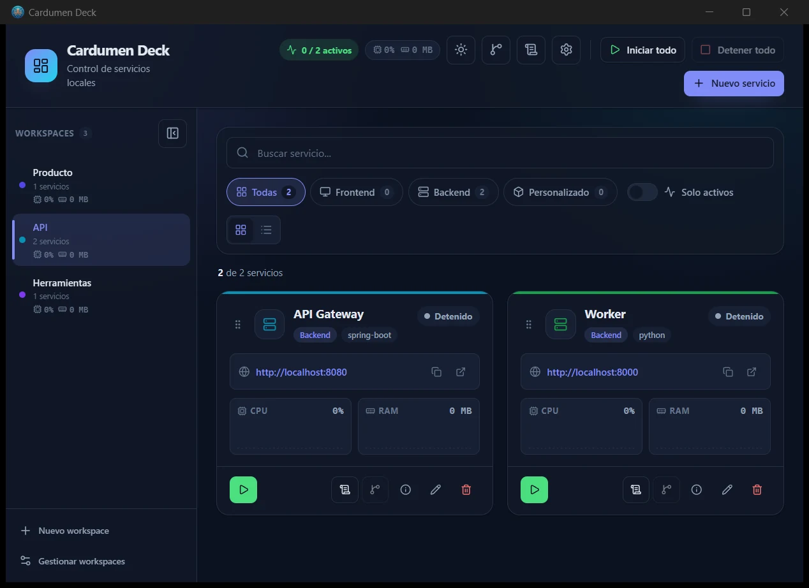

Local-firstCardumen
Deck
Many services, one current. Un dashboard local para arrancar, monitorear y operar tus servicios de desarrollo.
Windows
Tauri 2
Vue 3
Rust
github.com/DaniloGarrido/cardumen-deck
